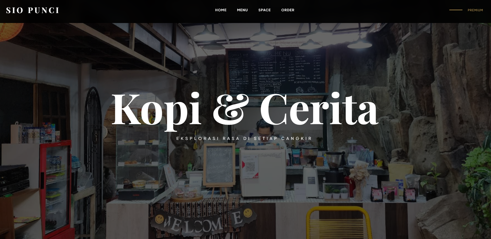

HELLO, I'M
Rafika Puspitasari
Seorang Pengembang Web yang memadukan estetika premium, kecepatan performa, serta struktur arsitektur kode modern yang efisien dan interaktif.
// SECURE_IDENTITY_FILES
Tentang Saya
Biodata Umum
Ringkasan Profil
Saya merupakan seorang pelajar sekolah menengah atas sekaligus pengembang teknologi web yang berdedikasi tinggi. Senang mengeksplorasi bahasa pemrograman baru, mengoptimalkan antarmuka pengguna agar fungsional, dan merancang platform digital yang intuitif.
Kemampuan Utama (Tech Stack)
// DEPLOYED_APPLICATIONS
My work

my profile
ProductionKarya pertama saya dalam dunia pengembangan web adalah membuat website biodata sederhana dari nol. Melalui proyek ini, saya mulai mempelajari dasar-dasar HTML, CSS, dan cara membangun tampilan website yang rapi serta mudah dipahami. Meskipun masih sederhana, proyek ini menjadi langkah awal yang berharga dalam perjalanan saya mempelajari teknologi web dan mengembangkan kreativitas di dunia digital. Yukk ke karya kuuu!!!!!!

my friend's cafe shop
InterfaceKarya kedua saya adalah membuat website bertema kafe untuk teman saya. Dalam proyek ini, saya belajar merancang tampilan website yang lebih menarik, modern, dan nyaman dilihat oleh pengunjung. Saya juga mulai memahami pentingnya tata letak, pemilihan warna, serta pengalaman pengguna agar informasi menu dan suasana kafe dapat tersampaikan dengan baik melalui website. Yukk lihat karya kedua kuuu!!!!!!
// ESTABLISHED_BROADCAST_LINKS
Sosmed Saya